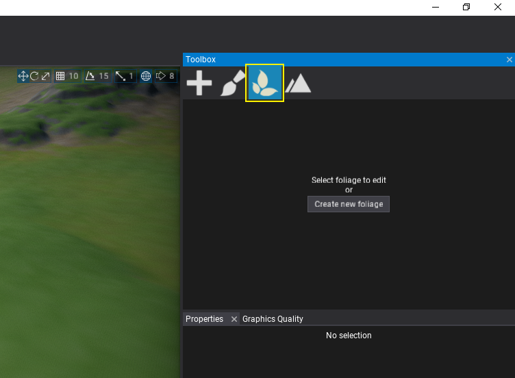
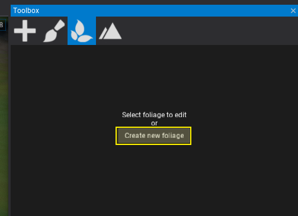
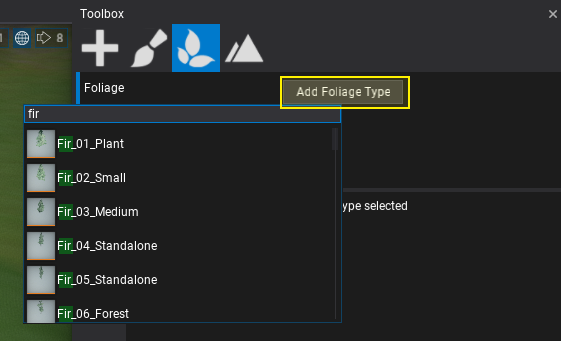
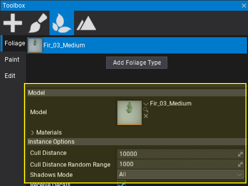
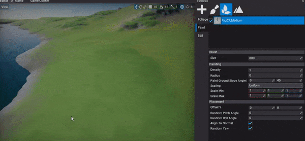

HOWTO: Create foliage
In this tutorial you will learn how to create a new foliage actor and add it to your scene.
1. Open scene
Create or open existing level to add new foliage to it. Flax supports many foliage objects per scene so there is no limit.
2. Select Foliage tab in Toolbox
Open Toolbox window and pick the foliage tab.

3. Use Create new foliage button
Press the Create new foliage button to add new foliage actor instance in your scene.

3. Add foliage type
After you create new foliage actor, Editor will auto-select it. When foliage actor is selected the Toolbox tab shows more information. You can use it to modify the foliage types collection, spawn and remove foliage instances, or edit single instances using gizmo and properties panel.
Use Add Foliage Type button and pick a foliage type model asset (it must be unique within the foliage actor).

4. Edit foliage type properties

Now, you can select the foliage type and edit its properties. To learn more about foliage types properties see this page.
5. Paint foliage

The last step is to actually spawn some foliage instances into your level. To do so, select Paint tab and use editor viewport to paint foliage with a brush. You can adjust Brush Size in the properties panel as well as selected foliage type placement and painting properties.
Use left mouse button to paint over the object surfaces or hold Control key to remove instances.
To paint with a given subset of foliage types use the checkboxes in the foliage types list to choose what type to use during painting.